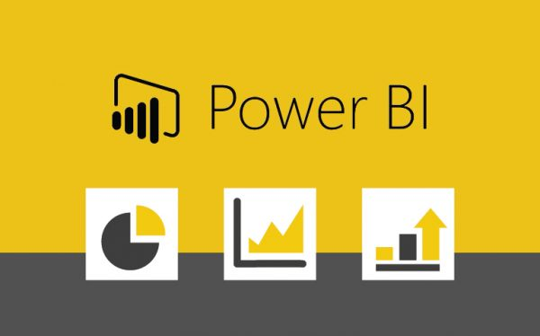

I'm Abhishek Gupta from New Delhi, I did my Bachelor's in Computer Application from Hierank Business
School,Noida. Recently I have completed my Internship as a Data Analyst in which I have an experience of working on
different projects which includes ETL Process, Creating reports and dashboards. Apart from this I have also completed
many projects with different sets of Data. I primarily use SQL, Power Bi and Python This Portfolio contains the
projects that I have completed and tools that I'am familiar with,but I'm always a go-getter and would
always keep an open scope for gaining experience in whatever new comes along.
I have taken Census 2011 data from official census website and done data exploration in SQL.
This comprehensive analysis provides insights into population dynamics, growth rates, gender ratios,
and literacy rates across Indian states and districts. The findings highlight disparities in growth,
gender ratios, and education, offering a foundation for targeted policy interventions and resource allocation.
The ability to identify top and bottom performers in various metrics allows for a
focused approach to addressing specific issues within states and districts.

Credit Card financial dashboard using PowerBi.
Developed an interactive dashboard using transaction and customer data to
provide real-time insights.
Streamlined data processing and analsis to monitor key performance metrices and trends.
Derived actionable insights based on dashboard findings to support decision-making.
I've worked with a python script to analyze the Netflix
Dataset which had information about the TV shows and
movies available on Netflix till 2021, the dataset was
collected from flexible which is a third-party Netflix
search engine and is also available on Kaggle.

AtliQ Grands, renowned for its chain of five-star hotels across India, boasts a rich 20-year history in the hospitality sector.
Nevertheless, they currently grapple with diminishing market share and revenue in the luxury and business hotel segment,
attributed to competitive pressures and less effective management choices. In response to this challenge,
the managing director of AtliQ Grands is embarking on a strategic initiative to integrate "Business and Data Intelligence" into their operations.
The primary aim is to recapture market share and bolster revenue.

with the help of SQL, I have done analysis of this dataset which offersa deep dive into various aspects of pizza sales,
including order volumes, revenue generation, customer preferences, and sales trends. The insights derived can inform
strategic decisions related to pricing, inventory management, staffing, marketing, and menu optimization.
By understanding the most popular and profitable items, the business can focus on enhancing customer satisfaction
and maximizing revenue. Additionally, analyzing order patterns by time and date helps in optimizing operations
to better meet customer demand.